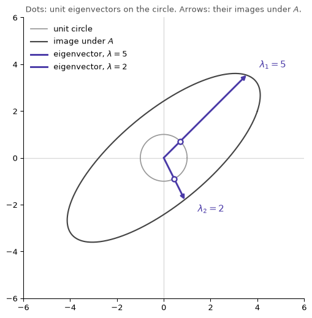

\(A\) stands in for one step of a two-class linear population map (next year’s sizes are mixtures of this year’s).
Whole numbers were chosen so the eigenvalues are exactly \(5\) and \(2\), which keeps the geometry drawable.
A matrix fitted to real counts would be high-dimensional with decimal eigenvalues.
\(A\) is not symmetric. That matters for the figure and for the SVD comparison below.
numpy.linalg.eig returns the eigenvalues and eigenvectors:
Code
import numpy as npnp.set_printoptions(precision=3, suppress=True)A = np.array([[4.0, 1.0], [2.0, 3.0]])vals, vecs = np.linalg.eig(A)# numpy 2.x returns complex dtype from eig even when every eigenvalue is real,# as they are here. It also returns unit-length eigenvectors; since these are# defined only up to scale, rescale each to start with a 1 so the whole numbers# below match the text. (Fine here -- a zero first entry would need another# pivot, and a rotation matrix has no real eigenvector to rescale at all.)vals, vecs = vals.real, vecs.realvecs = vecs / vecs[0]for lam, v inzip(vals, vecs.T):print(f"lambda = {lam:5.2f} eigenvector = {v} A @ v = {A @ v}")
lambda = 5.00 eigenvector = [1. 1.] A @ v = [5. 5.]
lambda = 2.00 eigenvector = [ 1. -2.] A @ v = [ 2. -4.]
Check: A @ v equals \(\lambda v\) for each pair.
2 Eigendecomposition
Put the eigenvectors in the columns of \(P\) and the eigenvalues on the diagonal of \(D\):
\[
A = P D P^{-1},
\qquad
P = \begin{bmatrix} v_1 & v_2 \end{bmatrix},
\qquad
D = \begin{bmatrix} \lambda_1 & 0 \\ 0 & \lambda_2 \end{bmatrix}.
\]
Read right to left:
\(P^{-1}\) expresses the input in the eigenvector basis.
\(D\) scales each coordinate by its eigenvalue.
\(P\) maps back to the original coordinates.
The eigenvalues are the roots of the characteristic equation
\[
\det(A - \lambda I) = 0.
\]
For this \(A\) that is \(\lambda^2 - 7\lambda + 10 = 0\), with roots \(5\) and \(2\).
The next cell reconstructs \(A\) and maps the unit circle:
Code
import matplotlib.pyplot as pltACCENT ="#4A3AA7"GREY ="#999999"P = vecsD = np.diag(vals)print(f"max |A - P D P^-1| = {np.abs(A - P @ D @ np.linalg.inv(P)).max():.2e}")theta = np.linspace(0, 2* np.pi, 400)circle = np.vstack([np.cos(theta), np.sin(theta)])image = A @ circlefig, ax = plt.subplots(figsize=(6.2, 6.2))ax.axhline(0, color="0.85", lw=1, zorder=0)ax.axvline(0, color="0.85", lw=1, zorder=0)ax.plot(*circle, color=GREY, lw=1.3, label="unit circle")ax.plot(*image, color="#444444", lw=1.6, label="image under $A$")for k, (lam, v) inenumerate(zip(vals, vecs.T)): u = v / np.linalg.norm(v) ax.annotate("", xy=lam * u, xytext=(0, 0), arrowprops=dict(arrowstyle="-|>", color=ACCENT, lw=2.2, shrinkA=0, shrinkB=0), zorder=3, )# Mark where the eigenvector meets the unit circle: the arrow is that same# point scaled by lambda, and its tip lands back on the ellipse. ax.plot(*u, marker="o", ms=6, color="white", mec=ACCENT, mew=1.8, zorder=5) ax.plot([], [], color=ACCENT, lw=2.2, label=f"eigenvector, $\\lambda = {lam:.0f}$") ax.annotate(f"$\\lambda_{k +1} = {lam:.0f}$", xy=lam * u, xytext=(16, 12* np.sign(u[1])), textcoords="offset points", color=ACCENT, fontsize=11, va="center", )ax.set_aspect("equal")ax.set_xlim(-6, 6)ax.set_ylim(-6, 6)ax.grid(False)for side in ("top", "right"): ax.spines[side].set_visible(False)ax.legend(frameon=False, loc="upper left", fontsize=10)ax.set_title("Dots: unit eigenvectors on the circle. Arrows: their images under $A$.", fontsize=10, color="0.3")plt.show()
max |A - P D P^-1| = 8.88e-16

Results:
Reconstruction error is at machine precision, so \(A = PDP^{-1}\) holds.
The unit circle maps to an ellipse.
The purple arrows land near the ellipse axes but do not coincide with them.
The ellipse axes are the singular vectors of \(A\) (directions of maximum and minimum stretch). They coincide with the eigenvectors only when \(A\) is symmetric. This \(A\) is not.
3 Powers and applications
From \(A = PDP^{-1}\):
\[
A^2 = PD^2P^{-1}, \qquad A^k = PD^kP^{-1}.
\]
Raising \(A\) to a power reduces to raising the eigenvalues to that power. The larger \(|\lambda|\) dominates \(A^k\) for large \(k\), which is why the spectrum controls the long run of a repeated linear map.
Concept
Definition
Typical use
Eigenvector
direction \(v\) with \(Av = \lambda v\)
PCA principal axes
Eigenvalue
scale factor \(\lambda\) along \(v\)
variance explained
Characteristic equation
\(\det(A - \lambda I) = 0\)
finding the spectrum
Decomposition
\(A = PDP^{-1}\)
Markov chain powers
Existence
\(n\) independent eigenvectors (diagonalizable)
vibration normal modes
4 Constraints
The decomposition requires \(n\) independent eigenvectors. Two failures:
Rotation: every direction turns, so there is no real eigenvector.
Defective matrix: too few independent eigenvectors to fill \(P\), so \(P^{-1}\) does not exist.
For this non-symmetric \(A\), the eigenvectors are not orthogonal, so \(P^{-1} \neq P^{\top}\). Inversion is unstable when those directions are nearly parallel.